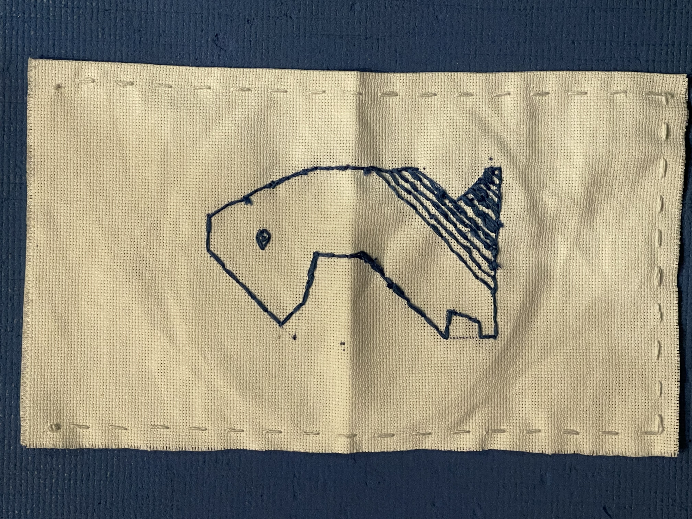
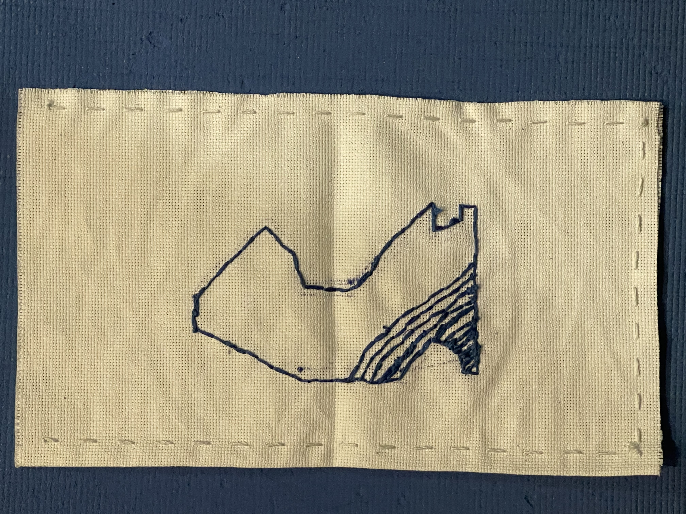

Exhibition of Wonder - Bag with Embroidery
Day 3


On the third work day, I brought all of the blue thread I had except for one piece. I finished embroidering my second knight and continued embroidering the inside, but again ran out of blue thread after two blocks. Finally, I sewed the bag portion of the bag, first cutting off the frayed sides, and then using my white thread to sew running stiches (which I practiced during the prototyping). This was the final part of my project, as while I originally wanted to add straps I realized that they would make it very difficult to place items within the bag. While I may've felt frustrated, I mainly just felt satisfaction from finally finishing my project.
[Previous Day]
[Back to Hub]
[Next Day]